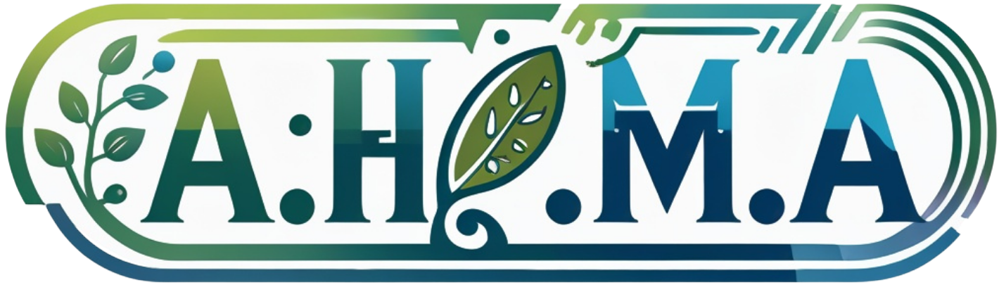

Sistema de monitoramento 💚
Monitore você mesmo as informações em tempo real, através do nosso sistema IoT:

Monitore você mesmo as informações em tempo real, através do nosso sistema IoT:
Através da nossa enciclopédia de plantas conheça as principais espécies da nossa horta e suas peculiaridades:
O A.H.M.A. (Automatização da Horta Mello Ayres) foi um nome escolhido com carinho pelos desenvolvedores para representar esta solução tecnológica. A aplicação visa facilitar a análise das informações técnicas da horta, traduzindo-as para uma linguagem de compreensão universal a partir dos dados coletados.
Para que isso aconteça, existe um fluxo contínuo de coleta, tratamento, avaliação e exibição dos dados na forma de gráficos intuitivos. Além do monitoramento em tempo real, a plataforma disponibiliza o conhecimento detalhado das espécies e peculiaridades presentes na horta.
Todo o projeto foi pensado para gerar um impacto real: mais do que a entrega de um Trabalho de Conclusão de Curso (TCC), desenvolvemos uma aplicação prática que resolve um problema concreto, conectando a Agricultura 4.0 diretamente às exigências e inovações do mercado de tecnologia.